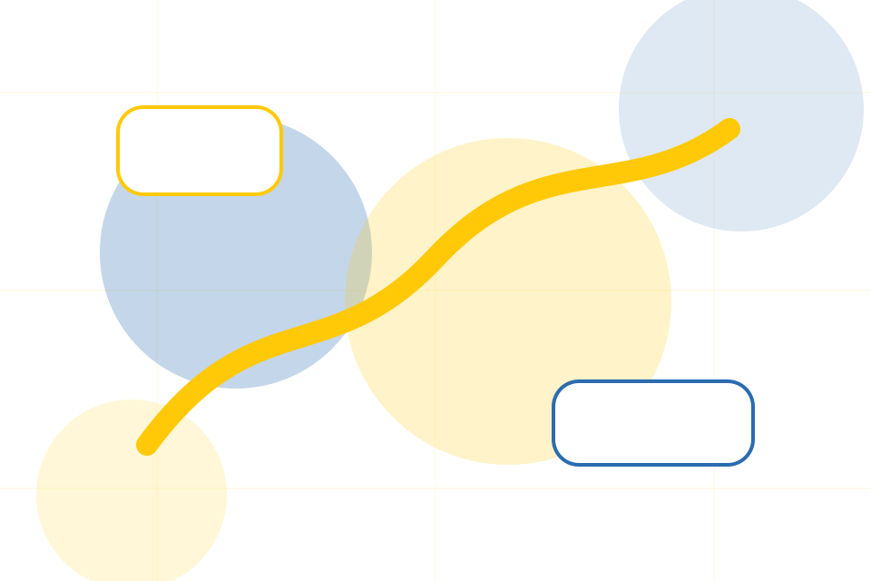
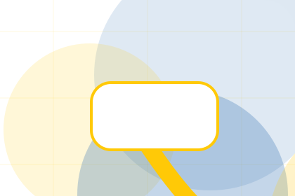
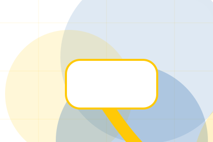
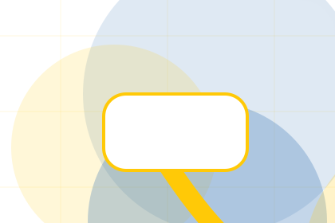
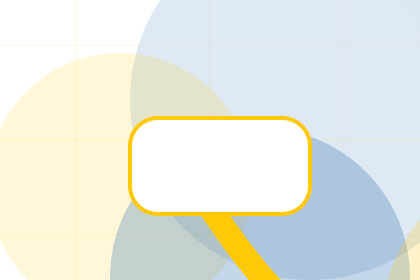
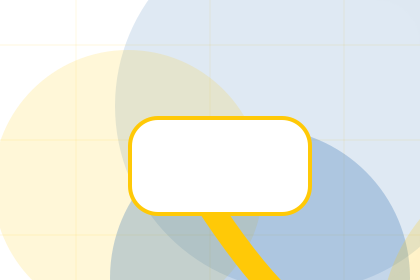
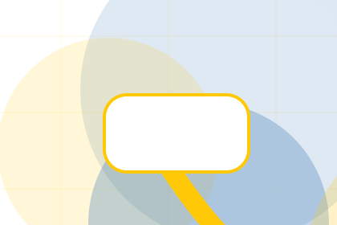
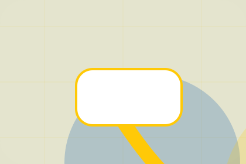

Resources / 01
Resources by Good
Resources shaped for nonprofit, charity & social impact decisions.
Resources opens as a clear nonprofit decision hub: what Good offers, who it helps, why it matters, and which route to take first.
The first screen combines positioning, proof, primary action, and fast internal navigation, so people can act immediately or compare the rest of the resources route with context.
Nonprofit scopeCompare optionsRequest advice
Yellow impact hero
Choose an impact route
Select the closest route and Good keeps the next step, proof, and follow-up expectation aligned with trust and contribution.

Resources / 03
Toolkits for deeper decisions
Toolkits gives researching visitors a practical route into guides, checklists, and comparison material without leaving the site structure.
Each resource behaves like a useful internal link, giving cold and warm visitors a way to learn, compare, and return to the action path.
Explore ResourcesGuide
A useful entry point for visitors who need more context before they donate today.
Checklist
A scannable comparison aid that makes research usable before the next decision.

Questions
A route back to support, services, or contact when the visitor is ready to act.
Resources / 04
Guides for deeper decisions
Guides gives researching visitors a practical route into guides, checklists, and comparison material without leaving the site structure.
Each resource behaves like a useful internal link, giving cold and warm visitors a way to learn, compare, and return to the action path.
View ResourcesGuide
A useful entry point for visitors who need more context before they donate today.
Checklist
A scannable comparison aid that makes research usable before the next decision.
Questions
A route back to support, services, or contact when the visitor is ready to act.
Good guides guide
A useful entry point for visitors who need more context before they donate today.
Open resourceGood guides checklist
A scannable comparison aid that makes research usable before the next decision.
Open resource
BriefGood guides brief
A route back to support, services, or contact when the visitor is ready to act.
Open resourceResources / 05
Campaigns for deeper decisions
Campaigns gives researching visitors a practical route into guides, checklists, and comparison material without leaving the site structure.
Each resource behaves like a useful internal link, giving cold and warm visitors a way to learn, compare, and return to the action path.
Explore Resources- 01
Guide
A useful entry point for visitors who need more context before they donate today.
- 02
Checklist
A scannable comparison aid that makes research usable before the next decision.
- 03
Questions
A route back to support, services, or contact when the visitor is ready to act.
Resources / 06
Downloads for deeper decisions
Downloads gives researching visitors a practical route into guides, checklists, and comparison material without leaving the site structure.
Each resource behaves like a useful internal link, giving cold and warm visitors a way to learn, compare, and return to the action path.
View ResourcesGood structures downloads around guide, checklist, and a clear next route so visitors can compare the block quickly before they donate today.
Donate TodayGood downloads guide
A useful entry point for visitors who need more context before they donate today.
Open resource
ChecklistGood downloads checklist
A scannable comparison aid that makes research usable before the next decision.
Open resource
BriefGood downloads brief
A route back to support, services, or contact when the visitor is ready to act.
Open resourceResources / 08
Learn for deeper decisions
Learn gives researching visitors a practical route into guides, checklists, and comparison material without leaving the site structure.
Each resource behaves like a useful internal link, giving cold and warm visitors a way to learn, compare, and return to the action path.
Explore ResourcesGuide
A useful entry point for visitors who need more context before they donate today.

Checklist
A scannable comparison aid that makes research usable before the next decision.

Questions
A route back to support, services, or contact when the visitor is ready to act.
Resources / 09
Use for deeper decisions
Use gives researching visitors a practical route into guides, checklists, and comparison material without leaving the site structure.
Each resource behaves like a useful internal link, giving cold and warm visitors a way to learn, compare, and return to the action path.
Explore ResourcesA useful entry point for visitors who need more context before they donate today.
A scannable comparison aid that makes research usable before the next decision.
A route back to support, services, or contact when the visitor is ready to act.
Resources / 10
Donate Today
Good closes the resources route with a clear action, a quick reminder of the value, and a low-friction way to donate today.
Visitors who are ready can use the primary action. Visitors who are still comparing can scan the section links, proof, and support routes before they donate today.
Donate TodayThe final block keeps the choice simple: act now, compare one more proof route, or send enough detail for a focused response.
Donate Todaytrust and contribution
Donate Today
A donor site with bold yellow impact modules, transparent metrics, story cards, and donation selector. Resources ends with a direct path to donate today, plus enough context for visitors who still need to compare.

Donate TodayImportant notes before you act
Donation use statements must match governance records, reporting, and local fundraising rules.